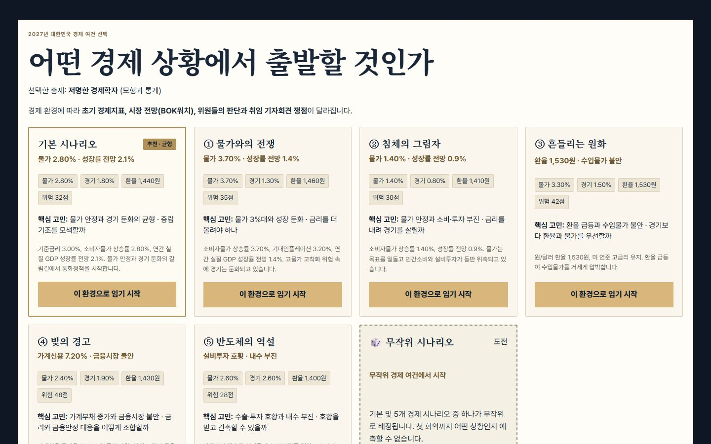
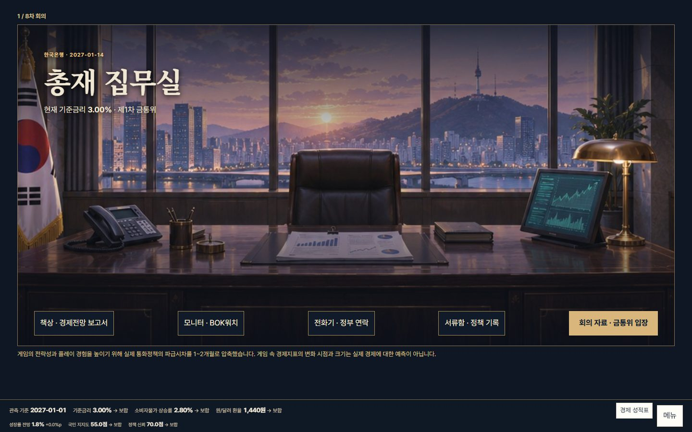
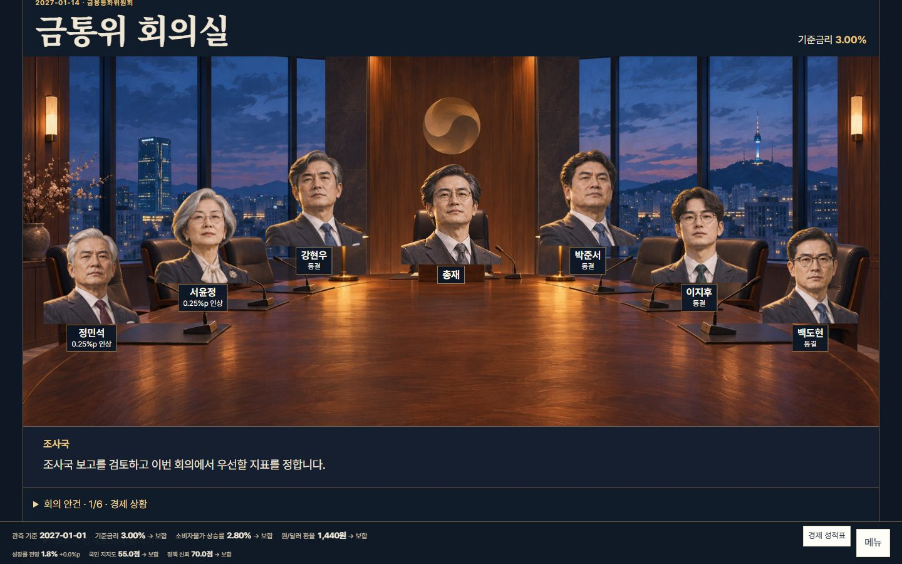

이런 게임입니다
한국은행 총재가 되어 2027년 한 해 여덟 차례의 금융통화위원회(금통위)에서 기준금리를 결정하는 통화정책 전략 시뮬레이션입니다. 물가, 성장, 가계신용, 금융위험 가운데 무엇을 우선할지 정하고, 총재와 위원 여섯 명이 표결로 금리를 가릅니다.
금리를 정하는 것으로 끝나지 않습니다. 기자회견에서 답변하고, 시장 반응과 신문 1면을 읽은 뒤 다음 회의로 넘어갑니다. 여덟 차례 회의를 마치면 2029년 평가에서 임기 중 선택과 결과를 돌아봅니다.
2027년 수치는 가상입니다. 게임 속 경제지표의 변화 시점과 크기는 실제 경제에 대한 예측이 아니며, 기자간담회도 게임 속 가상 설정입니다.
이렇게 진행됩니다
저명한 경제학자(모형과 통계), 경제 관료(위기관리와 정책 조율), 경제 전문가 출신 정치인(국민 생활과 협상) 중 하나로 시작합니다. 출신마다 모형의 경로를 관측 지표와 대조하거나, 정책수단별 효과와 부작용을 구분하거나, 가계·기업이 실제로 부담하는 비용을 비교하는 식의 접근이 다릅니다.
기본 시나리오와 물가와의 전쟁, 침체의 그림자, 흔들리는 원화, 빚의 경고, 반도체의 역설 가운데 출발 상황을 고르거나 무작위로 배정받습니다. 시나리오마다 초기 물가·경기·환율·위험 점수와 핵심 고민, 취임 기자회견의 쟁점이 다릅니다.
취임 후 첫 자리에서 통화정책 출입기자의 세 가지 질문에 답변을 고릅니다. 매파와 비둘기파 같은 질문이 던져집니다.
책상의 경제전망 보고서, 모니터의 BOK워치, 전화기의 정부 연락, 서류함의 정책 기록을 확인한 뒤 회의 자료를 들고 금통위에 입장합니다. 회의 전에 긴급 경제 속보나 정부 측 연락이 끼어들 수 있습니다.
물가·성장·가계신용·금융위험 중 우선할 목표를 정하고 금리안별 전망을 비교합니다. 필요하면 위원을 설득하고, 금리안을 제출하면 총재와 위원 여섯 명의 표로 결정합니다. 2·5·8·11월에는 6개월 뒤 금리 전망도 제시합니다.
기자회견에서 답변한 뒤 시장 반응과 신문 1면을 읽고 다음 회의로 갑니다. 하단 경제 성적표에서 추이와 목표를 확인하고, 메뉴에서 저장한 뒤 타이틀의 이어하기로 돌아올 수 있습니다.
화면 미리보기

2. 경제 여건 선택 — 어떤 상황에서 출발할까

3. 신년 기자간담회 — 세 가지 질문에 답한다

4. 총재 집무실 — 회의 전에 자료를 살핀다

5. 금통위 — 총재와 위원 여섯 명의 표결
경제 모형은 이렇게 움직입니다
게임의 전략성을 높이기 위해 실제 통화정책의 파급시차를 1~2개월로 압축했습니다. 계수와 초기 상태는 시나리오 가정이며, 게임 속 경제지표의 변화는 실제 경제에 대한 예측이 아닙니다.
기술 및 제작 방식
개발 현황
누구나 바로 해 볼 수 있습니다. 진행 상황은 메뉴에서 저장하고 타이틀의 이어하기로 이어 갈 수 있습니다.